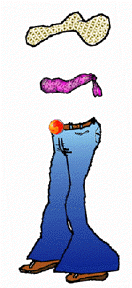

 YESTERDAY I WAS BORN. The hour the plastic werewolves howled and velvet witches' crooked noses twitched.
My skin sags in a manner not unseemly for a fleshy being. I frankly amn't convinced I'm going anywhere although His Hairiness says he has plans for me.
Probably just simulation for another nymphette, a virtuous bird who couldn't be won over even if he tried. These are the kind who almost make him cry. They're good either by nature or trial by fire and all of his ministrations will just make for a more stolid shot of Lot. He'll fuck and fly. If I am a demonic decoy I hope I end up getting to meet the real McCoy, if only to freak her out, grind a heel in her missionary grin, spit acidic sperm in her fire-safe face.
This store's a bore and the giddy proprietors are a ghastly load of self-righteous druggies and closet misogynists. I don't know what's so special about the Brotherhood that Lucifer would outfit me in such a damned ditzy disguise . . . but the Prince of Darkness knows better than anyone how to keep an agent on barest need-to-know terms. Taught it to the frumpy Company that's supposed to be so bad, behind his biggest food service, but really just bumbles and bungles through some of the grittiest missions only with enough money from asshole underlings to cover their muddy tracks.
When I see the foot servant hop off his chrome chariot immediately his import announces itself. There's the sigil only my eyes can see telling of his destiny even before he enters the store. Like a pair of broken glasses or the Cancer's contorted characters. Ha! And I can tell ol' S'tan's outfitted him with a monster infatuation on my lookalike. Ooooo, the Most Fallen Angel hasn't lost his touch: here's sense of humor AND a devilish penchant for destruction. I can almost smell the peculiar delicacy Lucifer is preparing for himself in the cauldron of San Francisco Bay. Hardly wait for a taste.